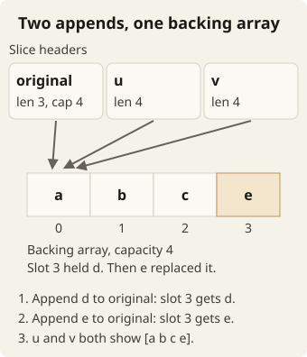

Go Infra Track · Optional warm-ups
Predict it. Run it. Explain it.
Five small Go experiments about copies, shared memory, queues, and ownership.
Use these experiments when a concept in a challenge feels unfamiliar. Each experiment takes roughly 10–20 minutes, with extra time to explore. The experiments are optional. They are not part of your submission.
Work with your AI partner. Tell it your prediction before you ask it to help write the experiment. Then explain any mismatch together.
Keep the programs in a scratch directory outside your challenge code. Each experiment gives a task to implement. Then it gives commands that run your programs, and the expected output. The experiments deliberately leave function names and program structure to you.
mkdir go-warmups
cd go-warmups
go mod init example.com/go-warmups
mkdir values copies channels slices ownershipGive each folder a main.go. Print only the requested values with fmt.Println. Then you can compare them with the output blocks. Predict first. Run second. Change one thing at a time.
Glossary
These experiments use each term below with one meaning only.
- Value copy: a separate copy of a value. A change to the copy does not change the original.
- Pointer: the address of a variable. A change through a pointer changes the original variable.
- Receiver: the value or the pointer that a method acts on. A value receiver is a value copy. A pointer receiver points to the original.
- Slice header: the small value that a slice holds. It contains a pointer to a backing array, a length and a capacity.
- Backing array: the array that stores the elements of a slice. Two slice headers can point to the same backing array.
- Channel: a queue that goroutines use to send and receive values. A buffered channel holds values up to its capacity.
- Close: the operation that ends the use of a channel or a file. A send on a closed channel panics. A write to a closed file returns an error.
- Gate: a channel that a goroutine waits on. When you release the gate, the goroutine continues.
- Owner: the part of the program that decides when to close a channel or a resource, such as a file.
- AI partner: the AI assistant that you work with.
Experiment 1: Which counter changes?
Build the first part:
- Make a struct that contains one integer counter.
- Write a function that takes the struct by value and increments its field.
- Initialize a variable to zero. Call the function with this variable.
- Print the caller's counter.
- Add another function that takes a pointer.
- Call it with the address of the same variable.
- Print the counter again.
Next, add methods:
- Give the type two increment methods. Give one method a value receiver. Give the other method a pointer receiver.
- Start with a fresh zero counter.
- Call the value method twice. Then call the pointer method twice.
- Print the caller's counter after each call.
Try it
Predict all six lines before you run the program:
go run ./values0
1
0
0
1
2The value function and the value method change their own value copies. The pointer versions change the original variable. When a variable is addressable, Go can take its address for a call to a pointer method. This convenience does not turn a value receiver into a pointer receiver.
Move the print inside the value function, after its increment. Predict the extra output. The result 1 inside and 0 outside is a useful clue. It helps when a handler appears to update a shared counter but the next request sees no change. Ask your AI partner to trace which variable each line reads.
AI mentor prompt
I am on Experiment 1, values and pointers. Ask me to predict each output line and to say which variable it reads. Give one hint at a time. Do not edit files. Do not show the answer unless I ask for it.
Experiment 2: What did the copy share?
Build the first part:
- Make a struct with a string and an integer slice.
- Initialize it with
"a"and[]int{1, 2, 3}. The length and the capacity of this slice are both three. - Assign the struct to a second variable.
- Through the second variable, change the string to
"b". - Through the second variable, change slice element zero to 99.
- Print the string and the slice of the first variable.
Next, change the second slice:
- Append 4 to the slice of the second variable. Store the returned slice back into that field.
- Change element one of that slice to 42.
- Print the original slice, the second slice and the capacity of the original slice. Print each on its own line.
Try it
go run ./copiesa [99 2 3]
[99 2 3]
[99 42 3 4]
3Copying a slice copies its slice header, and the slice header points to a backing array. Thus both structs share elements at first. Assigning a new string field changes only the field of that struct. The append needs a larger backing array because the slice was full. Later element changes in the second slice no longer affect the first slice.
Next, do a separate check in this folder:
- Add a struct that contains a
sync.Mutexand a counter. - Add a function that accepts this struct by value. The function locks, increments and unlocks.
- Call the function once. Do not add prints or concurrency.
- Predict what this command reports:
go vet ./copies… passes lock by value …
… copies lock value …These lines are diagnostic fragments. Filenames, positions and wording depend on your code and your Go version. Expect a nonzero exit status. Each call receives a different lock, so the lock cannot coordinate access between copies.
A Mutex must not be copied after first use. If you pass the containing state by pointer, you avoid this mistake. Fix the example. Run vet again. It should succeed with no diagnostics.
AI mentor prompt
I am on Experiment 2, what a copy shares. Ask me to predict each output line and the vet result before I run the commands. Give one hint at a time. Do not edit files. Do not show the answer unless I ask for it.
Experiment 3: Fill, drain, and close a queue
Build the first part:
- Create an integer channel with capacity two.
- Send 10 and 20.
- Print the length and the capacity of the channel.
- While no goroutine receives from the channel, use a
selectto try to send 30. - Give the select a
defaultcase that printsfull.
Next, close the channel:
- Close the channel.
- Range over the channel and print each received value.
- Do one more receive with the two-value form.
- Print both results of that receive.
Keep this version in a single goroutine. Then no other goroutine can receive and change which case is ready.
Try it
go run ./channels2 2
full
10
20
0 falseThe default case makes the send attempt nonblocking. A close keeps the buffered values. The range drains 10 and 20 before it ends. A receive from the closed, empty channel returns immediately. It returns the zero value of the element type and false.
Now add a final send on the closed channel. Run the command again. After the same five lines, expect a panic that contains send on closed channel. Also expect a nonzero exit status. Stack traces vary. Remove that final send when you finish.
Predict what happens if you remove the default case instead. With a full buffer and no goroutine that can receive, this version cannot make progress. In a concurrent service, a check of len before you send is not a reservation. Another sender could fill the space. Arrange ownership so that the channel closes exactly once, after every sender stops.
AI mentor prompt
I am on Experiment 3, a channel as a queue. Ask me to predict the five output lines and the result of each change. Give one hint at a time. Do not edit files. Do not show the answer unless I ask for it.
Experiment 4: Reuse a batch buffer
Build the first case:
- Create a string slice with length zero and capacity four.
- Append
"a", "b", "c". - Print its length and capacity.
- Make a second slice with
first[:0]. - Append
"x"to the second slice. - Print the first slice.
Build a separate case:
- Make a fresh slice with length zero and capacity four. Append a, b, c to it.
- Set
uto the result of appending d to that slice. - Set
vto the result of appending e to the same original three-element slice. - Print u and v.
Build the final case:
- Start with the literal
[]string{"a", "b", "c", "d"}. Its capacity is four. - Append e to make w.
- Change the first element of w to z.
- Print the original and w.
Try it
go run ./slices3 4
[x b c]
[a b c e]
[a b c e]
[a b c d]
[z b c d e]The first three appends that fit in spare capacity reuse the existing backing array. In the u/v case, both appends target the same fourth slot. The second append overwrites d. The final case forces a new backing array because the original is full. The new capacity may vary. None of these expected results depends on its exact growth factor.

- The original slice has length 3 and capacity 4. Slot 3 is spare.
- Appending d to the original slice writes d into slot 3. The result u has length 4 and uses the same backing array.
- Appending e to the same original slice writes e into slot 3. The result v also uses the same backing array.
- u and v both show [a b c e].
This is the batching hazard. When you reset the length of a slice, the slice still uses the same backing array. Before you reuse the slice, make sure that no other operation still needs the old contents. Ask your AI partner to help you add a version that deliberately copies the elements. Then explain the changed output with the append and copy rules.
AI mentor prompt
I am on Experiment 4, a reused batch buffer. Ask me to predict the six output lines and which slices share a backing array. Give one hint at a time. Do not edit files. Do not show the answer unless I ask for it.
Experiment 5: Who waits, and who closes?
Build the program:
- Make a program that creates or truncates
out.txt. - Make it write three lines synchronously. Each line ends with a newline.
- Make it start a goroutine for a fourth line.
- Give the goroutine an
allowWritechannel. The goroutine must wait for a receive on this channel before it touches the file. - Make the goroutine signal a separate
donechannel after its write attempt. - Check all file errors.
Use these explicit gates, not sleeps. The gates establish an order even on a slow machine. For each variant, run the program again from scratch, so that the file starts empty.
Try it
First, defer the file close. Let main return without releasing the gate and without waiting. The goroutine cannot write its fourth line.
go run ./ownership
wc -l < out.txt3Second, close allowWrite to release the goroutine. Then wait for done. After that, return and let the deferred close run. Repeat those commands. Expect 4 lines and no write error.
Third, explicitly close the file before you release the gate. Then release the gate and wait for done. Print the write error. Expect a message that contains file already closed, and a three-line file. Waiting for completion cannot fix a resource that you closed too early.
For two final variants, replace the file experiment. Register three deferred prints with the labels defer 1, defer 2, and defer 3, in that order. Then return normally:
go run ./ownershipdefer 3
defer 2
defer 1Replace these prints with one deferred print, followed by os.Exit(1). Run the built binary in a shell without set -e, so that you can examine its exit code:
go build -o ownership-demo ./ownership
./ownership-demo
printf 'exit=%s\n' "$?"exit=1os.Exit skips deferred calls. No deferred message should appear. In your service, keep resources alive until their users finish. Complete cleanup before the service exits. Explain who owns each close and what makes it safe. That explanation matters more than memorizing the output.
AI mentor prompt
I am on Experiment 5, who waits and who closes. Ask me to predict the result of each variant and to explain who owns each close. Give one hint at a time. Do not edit files. Do not show the answer unless I ask for it.